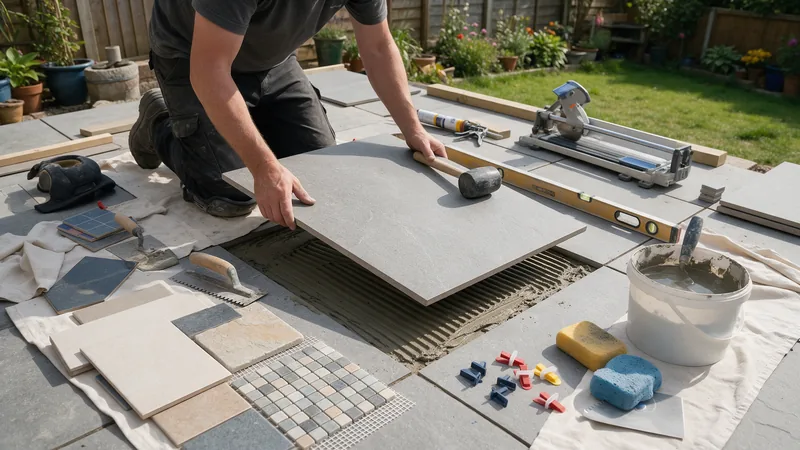

Home / Services / Outdoor porcelain tiling
Outdoor porcelain tiling
Outdoor porcelain tiling.
Patios and paths in outdoor grade porcelain, laid on a full mortar bed with a fall away from the house. Outside it is the water and the frost that decide how long it lasts, so the base and the drainage are the job.
Outside is a different trade to inside
The tile looks similar and the skill looks similar, and then the weather does something no bathroom wall ever has to deal with. Water lands on it, runs across it and soaks underneath it. Then in January that water freezes, expands, and tries to lift the tile off whatever it is sat on.
That is why outdoor porcelain is laid differently. It goes on a full solid bed of mortar with nothing behind it, because any void under a tile will fill with water and then with ice. It is usually primed on the back with a slurry so the bond is complete. It is laid to a fall so the water runs away from the house rather than sitting in a puddle at the back door. And the base underneath has to be right, because a patio is only ever as good as what is under it.
The base, which is most of the job
Over an existing concrete base that is sound, falls the right way and is not cracked, the tiling can often go straight on. Over an old flagged patio, usually not: the flags move independently of each other and anything bedded across two of them will crack along the joint.
Where a new base is needed that is groundwork before it is tiling, and we will be clear about where our part starts. Some jobs we do start to finish and some are better with a groundworker doing the base. What we will not do is lay porcelain over something we know will move and let you find out in the second winter.
Frost, grip and the bits people forget
Outdoor porcelain is made for this: it is dense, it takes up almost no water and it is frost resistant, which is exactly what ordinary indoor tile is not. Do not let anybody lay indoor tile outside.
Grip is worth a thought at the choosing stage rather than afterwards. Outdoor tiles carry a slip rating, and a smooth finish that looks lovely in a brochure can be unpleasant on a wet step. We will say which of two tiles we would rather walk on in the rain in February.
Then there are the bits that get forgotten on every patio: where the water actually goes once it has run off, whether there is a drainage channel or a gravel margin for it, how the tiling finishes at a step or a lawn edge, and whether the finished level still sits safely below the damp course on the house. That last one matters and it is not negotiable.

Generated photoGenerated for this demo. Not a photograph of a real job.
 Generated photo
Generated photoOutdoor porcelain is thick and dense, so every cut is a wet saw cut and every cut takes time.
In section
What a grout joint actually is.
Two tiles from the side with the joint between them. Grout is a filler, not a waterproof layer, and it never was. What keeps water out is what is behind it.
Drawn in the browser rather than photographed. The joint is drawn far wider than life so the detail shows.
On the job
How this one usually goes.
- Look at the ground and the levelsWhat the base is, whether it falls the right way, where the water goes now, and where the damp course on the house sits. That last one sets the finished level.
- Agree the baseWhether the existing base can be used, needs work, or needs replacing. If it is groundwork rather than tiling we will say so and say who should do it.
- Choose the tile for outsideOutdoor grade porcelain with a slip rating that suits a wet February rather than a brochure photograph. Thicker than indoor tile, and worth getting right first.
- Set out from the houseThe line of the house usually sets the pattern, because that is the edge the eye reads. Cuts put at the far side or the planted edge where they show least.
- Lay on a full bed, with a fallBack of each tile primed with a slurry, a full solid mortar bed with no voids, and a consistent fall running water away from the house.
- Cut wetEverything on the wet saw. Outdoor porcelain is thick and dense, so cutting is a real part of the time rather than an afterthought.
- Point, and sort out the waterJointed with a proper exterior grout or pointing compound, edges and margins finished, and the drainage checked by actually running water across it.
A sample running order for this demo. Yours depends on the property and on what turns up when the old surface comes off.
Questions
Asked about this job.
Can outdoor porcelain be laid on an existing patio?
On sound concrete that is not cracked and falls the right way, often yes. On old flags, usually not. Flags move separately from each other, and a tile bedded across the joint between two of them will crack along that line in the first hard winter.
It is also worth checking the levels before you decide. Laying over the existing surface raises everything by the bed plus the tile, and if that brings the finished level up near the damp course on the house, it has to come up instead.
Will it crack in the frost?
Not if it is outdoor grade porcelain laid on a full bed. Porcelain made for outside takes up almost no water, so there is nothing in it for frost to expand. The failures we get called to are nearly always one of two things: indoor tile laid outside, or outdoor tile laid on dabs with voids under it that filled with water and then froze.
That is why the full bed is not an upgrade on the quote, it is the method.
Is it slippery when it is wet?
It depends entirely on the tile, which is why it is worth choosing with that in mind. Outdoor tiles are sold with a slip rating, and the textured finishes grip far better in the wet than the smooth ones.
We will tell you which of two tiles we would rather walk down a step on in the rain. It is a matter of fact about the surface, not a guarantee, and no tile is non slip in ice.
How much fall does a patio need?
Enough that water runs off rather than sits, and running away from the house rather than towards it. Where it goes once it has run off matters just as much, so a drainage channel or a gravel margin is often part of the job rather than an extra.
A patio that holds water in a shallow puddle is not only unpleasant, it is the thing that lifts tiles in winter. We check it with a hose before we call it finished.
Can you lay it on pedestals?
On a balcony, a roof terrace or over a flat roof, that is often the right system, and it is a different one to a bedded patio: thicker tiles, a supporting pedestal at each corner, open joints and the water draining away underneath.
On anything over a living space or a roof we would want to know what the waterproofing underneath is and who is responsible for it before quoting, because that layer matters far more than the tile does.
General trade knowledge written for this demo, not advice on your property.
Our work
Sample jobs like this.
Generated photoCutting wet, out the backWindermere · Sample Generated photoCombed out, clips inUlverston · Sample
Generated photoCombed out, clips inUlverston · Sample Generated photoFour tiles, four different jobsKendal · Sample
Generated photoFour tiles, four different jobsKendal · SampleMade up samples with generated pictures. Tap one for the detail.
Also
The other things we do.
Bathroom wall and floor tiling
Walls and floors, set out from the middle so the cuts land where nobody looks, and waterproofed behind the tile rather than relying on the grout to do it.
More →Kitchen splashbacks
The strip of wall between the worktop and the units, which is small, awkward, full of sockets and the one bit of tiling people stand two feet away from every day.
More →Large format and porcelain tiles
Big thin porcelain, two pairs of hands and a suction frame. The tile is the easy part. Getting the wall flat enough for it is the job.
More →Natural stone tiling
Slate, limestone, travertine and marble. Heavier, thirstier and more variable than porcelain, so it wants sealing, sorting and a floor that can carry it.
More →Regrouting and resealing
Old grout raked out and replaced, the internal corners taken back to bare and resealed. The cheapest job on this list and often the only one a bathroom needs.
More →Shall somebody come and look at it?
Tell us the room and your postcode. Twenty minutes with a straightedge tells us more than any photograph.